SCAN BASKET
Next-Gen

N'hesitez pas à visiter le plus beau club du département...
SCAN Basket
Saison 2021-2022
La saison démarre début Octobre par 3 matchs de début de saison qui se sont terminés par 3 victoires dont une Big Win de prestige face à l’ Elan Bearnais qui a permis à la Next-Gen de commencer sa poule de brassage le plus sereinement possible, poule où elle termina première invaincue avec encore une Big Win de 115 points , cette fois face à Saint-Jean de Luz.
En janvier 2022 démarre la saison en excellence.
Hasparren – SCAN (29 - 69)
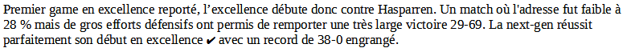
Salies – SCAN (62 - 57)
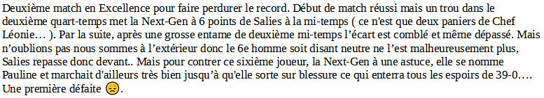
SCAN – Nord Bearn (59 - 28)
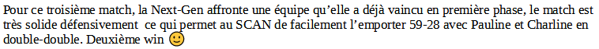
SCAN – USO (56 - 66)
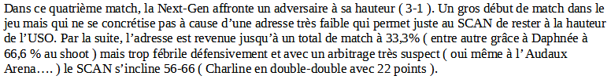
SCAN – Saint Palais (74 - 63)
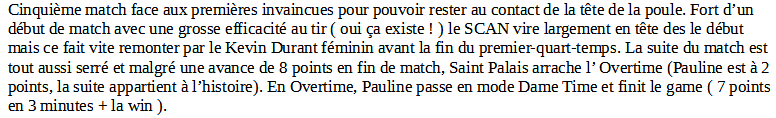
Nord Béarn – SCAN (45 - 65)
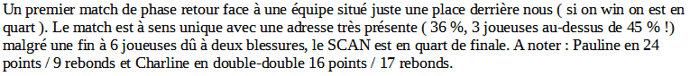
SCAN – Hasparren (66 - 38)
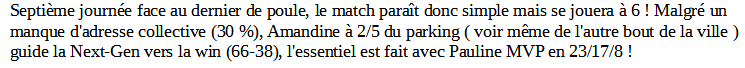
USO – SCAN (65 - 53)
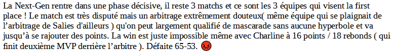
SCAN – Salies (65 - 83)
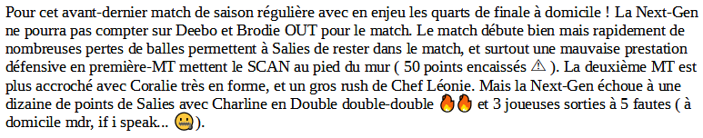
Saint-Palais - SCAN (79 - 69)
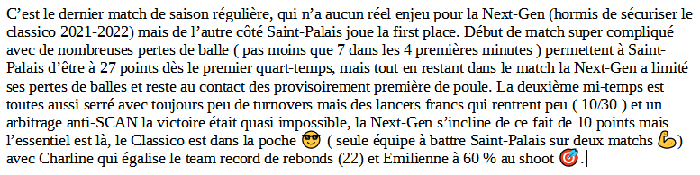
Urcuit - SCAN (71 - 70)
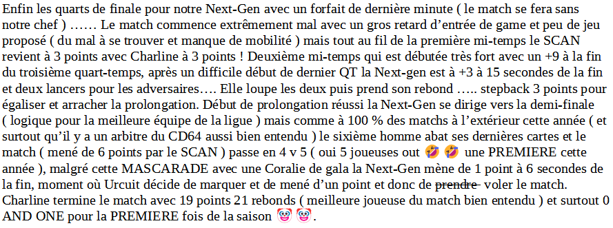